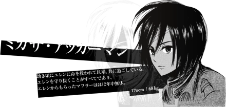

《进击的巨人》（進撃の巨人），是日本漫画家谏山创创作的少年漫画作品，于2009年在讲谈社旗下的漫画杂志《别册少年Magazine》上开始连载，至2021年4月9日完结。全139话 [66] 。 该作品曾获2011年“这本漫画真厉害！”男性榜第1名、“讲谈社漫画赏少年部门赏”等奖项 。2012年12月，该作正式宣布TV动画化，2013年4月6日，由WIT STUDIO改编的同名电视动画正式开始放送。 截止至2019年12月25日，单行本（含电子版）累计全球发行量突破1亿册 。 2021年12月，《进击的巨人》最终季最新话《断罪》将于2022年1月9日在日本电视台NHK综合频道播出 。
| 艾伦·耶格尔 | |
| 三笠·阿克曼 |  |
| 阿明·阿诺德 |